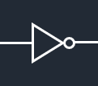
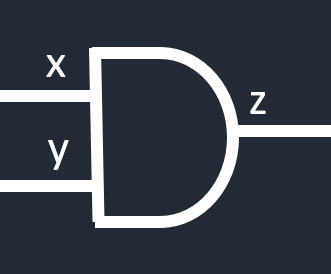
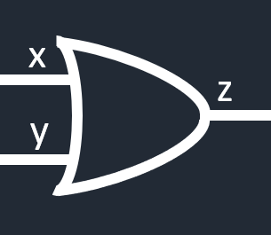
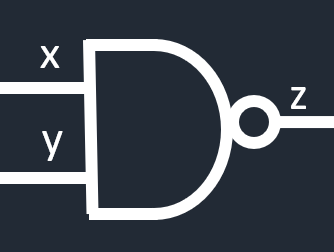
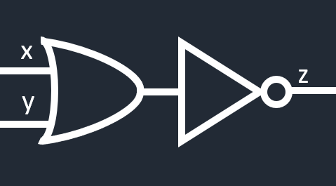
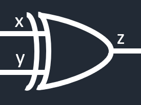
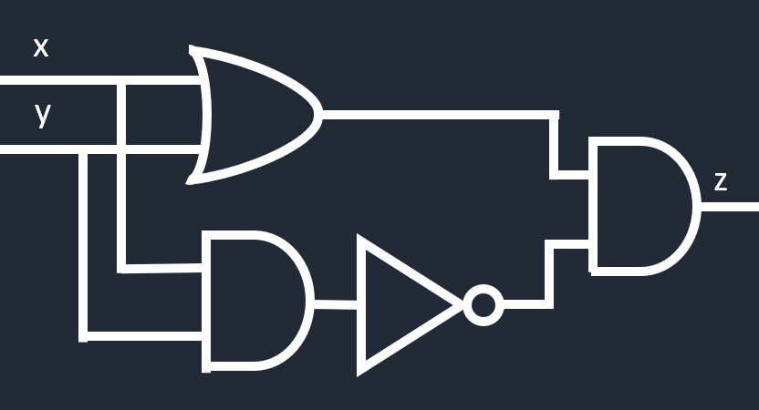
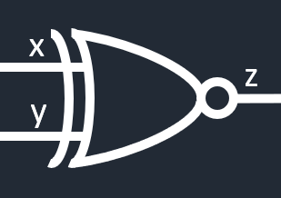
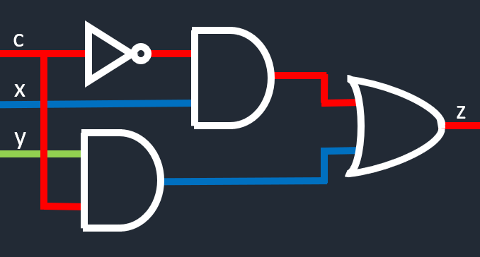
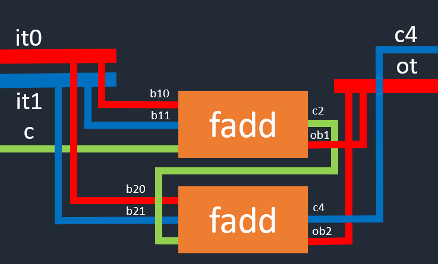

Syrup
NOT GATE
A not gate - often denoted ! - is the most simple gate, taking in 1 input, and returning the opposite.
Truth Table:
| Input | Output |
|---|---|
| 0 | 1 |
| 1 | 0 |
AND GATE
An and gate - often denoted & - is a gate which takes in two inputs and returns 1 if both inputs are also 1.
Truth Table:
| x | y | z |
|---|---|---|
| 0 | 0 | 0 |
| 0 | 1 | 0 |
| 1 | 0 | 0 |
| 1 | 1 | 1 |
OR GATE
An or gate - often denoted | - is a gate which takes in two inputs and returns 1 if either input is 1.
Truth Table:
| x | y | z |
|---|---|---|
| 0 | 0 | 0 |
| 0 | 1 | 1 |
| 1 | 0 | 1 |
| 1 | 1 | 1 |
NAND GATE
A nand gate is a negated and gate. What this means is the output is just the output from an and gate flipped.
Truth Table:
| x | y | z |
|---|---|---|
| 0 | 0 | 1 |
| 0 | 1 | 1 |
| 1 | 0 | 1 |
| 1 | 1 | 0 |
Here is a diagram showing how nand is constructed:

NOR GATE

A nor gate is a negated or gate. What this means is the output is just the output from an or gate flipped.
Truth Table:
| x | y | z |
|---|---|---|
| 0 | 0 | 1 |
| 0 | 1 | 0 |
| 1 | 0 | 0 |
| 1 | 1 | 0 |
Here is a diagram showing how nor is constructed:
XOR GATE
An xor gate is a exclusive or gate. When we use the word "or" in english, we normally are talking about exclusive or. This means when we have choice A or B, it means one or the other. In computing, an or gate is inclusive, meaning both options is also valid. xor is the "one or the other gate" - either but not both.
Truth Table:
| x | y | z |
|---|---|---|
| 0 | 0 | 0 |
| 0 | 1 | 1 |
| 1 | 0 | 1 |
| 1 | 1 | 0 |
Here is a diagram showing how nor is constructed:
In this example, we don't use a nand gate, however it could be substituted in, but it also useful to know
how to make the gate from just "and", "or", and "not".
XNOR GATE
An xnor gate is an exclusive negated or gate. The easiest way to construct this gate, is to just negate the xor gate we made previously. The xnor gate tests if both inputs are the same.
Truth Table:
| x | y | z |
|---|---|---|
| 0 | 0 | 1 |
| 0 | 1 | 0 |
| 1 | 0 | 0 |
| 1 | 1 | 1 |
There are two obvious ways to construct an xnor gate. The first is to create an xor gate, and then negate
the output:
The other option would be to take either both or neither -
by using two "and"s, one with the normal
inputs, and one with
the negated ones, then feeding those both into an "or" - as shown below.
MUX
Truth Table:
| c | x | y | z |
|---|---|---|---|
| 0 | 0 | 0 | 0 |
| 0 | 0 | 1 | 0 |
| 0 | 1 | 0 | 1 |
| 0 | 1 | 1 | 1 |
| 1 | 0 | 0 | 0 |
| 1 | 0 | 1 | 1 |
| 1 | 1 | 0 | 0 |
| 1 | 1 | 1 | 1 |
This is our first circuit which takes 3 inputs. Mux is short for multiplexer, which is another name for a data selector. The first cable, labelled c, is the control cable. This cable tells the circuit which of the other two inputs to output. If the control cable is zero, we output x, and if the control cable is one, then we output y. The colour of the cables is just to distinguish them from each other.
Example Code:
mux(<Bit>, <Bit>, <Bit>) -> <Bit> END
mux(c, x, y) = z where END
z = (!c & x) | (c & y) END
HADD
Truth Table:
| ib10 | ib11 | ob2 | ob1 |
|---|---|---|---|
| 0 | 0 | 0 | 0 |
| 0 | 1 | 0 | 1 |
| 1 | 0 | 0 | 1 |
| 1 | 1 | 1 | 0 |
The hadd (half adder) is a circuit which takes in 2 bits and adds them together. The largest value this can return is 2,
which cannot fit in a single bit, so we need to return bits to store the value.
The naming convention used is (?identifier)(type)(significance)(?index) - Let's break that down.
The identifier is not always used - only when needed. In this case we differentiate between the input
and the output, so we use "i" and "o" as the identifiers.
Then we have the type - in this case we are dealing with bits, so we use "b". We then have the significance.
Both inputs are 1's bits, so they have a significance of 1, whereas the output has a 1 and a 2's bit,
hence the 1 and 2. Lastly we have the index. We have multiple 1's bits in the input, so we put an index on the end to
tell them apart.
Decoding an example we get:
ib10 = first 1's bit from the input (input bit 1 0)
ob2 = 2's bit in the output (output bit 2).
This convention is used, instead of ambiguous names such as a,b,c etc.
Example Code:
hadd(<Bit>, <Bit>) -> <Bit>, <Bit> END
hadd(ib10, ib11) = ob2, ob1 where END
ob1 = xor(ib10, ib11) END
ob2 = ib10 & ib11
FADD
Truth Table:
| ib10 | ib11 | ib12 | ob2 | ob1 |
|---|---|---|---|---|
| 0 | 0 | 0 | 0 | 0 |
| 0 | 0 | 1 | 0 | 1 |
| 0 | 1 | 0 | 0 | 1 |
| 0 | 1 | 1 | 1 | 0 |
| 1 | 0 | 0 | 0 | 1 |
| 1 | 0 | 1 | 1 | 0 |
| 1 | 1 | 0 | 1 | 0 |
| 1 | 1 | 1 | 1 | 1 |
The fadd (full adder) is a circuit which takes in three inputs and adds them together. We still only
need 2 output bits, as the greatest value we can get is 3 (11). This time we take in two 1 bit inputs,
and a carry bit.
Note - the order of cables coming out of the boxes is the same as the order when the function was defined. In
this case the first hadd has a red and blue cable, the red being the 2's and the blue being the 1's bit.
Example Code:
fadd(<Bit>, <Bit>, <Bit>, <Bit>) -> <Bit>, <Bit> END
fadd(ib10, ib11, c) = ob2, ob1 where END
c20, b10 = hadd(ib10, ib11) END
c21, ob1 = hadd(c, b10) END
ob2 = xor(c20, c21)
c - carry
RCA2
Truth Table:
| it0 | it1 | c | c4 | ot |
|---|---|---|---|---|
| 00 | 00 | 0 | 0 | 00 |
| 00 | 00 | 1 | 0 | 01 |
| 00 | 01 | 0 | 0 | 01 |
| 00 | 01 | 1 | 0 | 11 |
| ... | ... | ... | ... | ... |
| 11 | 10 | 0 | 1 | 01 |
| 11 | 10 | 1 | 1 | 10 |
| 11 | 11 | 0 | 1 | 10 |
| 11 | 11 | 1 | 1 | 11 |
An rca (ripple carry adder) is another name for a fadd. It gets it name by the fact the carry bit ripples up the chain of fadds. In this example we are going to make an rca2, which can add two bit numbers instead of just one bit numbers. Also in this case the type of the input is no longer a "Bit", but is now a "Two".
Example Code:
<Two> = [<Bit>, <Bit>] END
... END
rca2(<Two>, <Two>, <Bit>) -> <Bit> END
rca2(it0, it1, c) = c4, ot where END
[b20, b10] = it0 END
[b21, b11] = it1 END
END
c2, ob1 = fadd(b10, b11, c) END
c4, ob2 = fadd(b20, b21, c2) END
END
ot = [ob2, ob1]
We start by splitting two Twos from the input into Bits, then we pass both of the 1's bits into the first fadd, along with the carry bit. This returns a 1's place value bit (ob1), and a 2's carry bit (c2). We then pass the 2's bits from the input into the second fadd, along the the 2's carry. This then returns our c4 output, and the 2's place value bit, which we combine with the 1's bit to get our output Two.